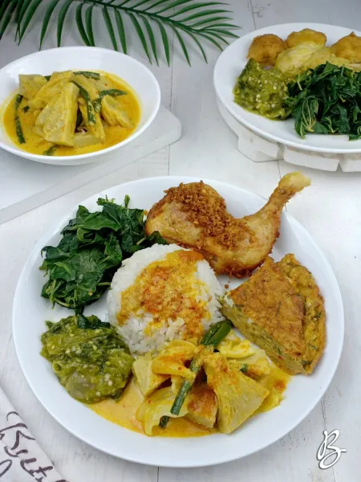

Nasi Padang

Bahan-Bahan
- Sayur Nangka
- Nangka muda, potong-potong - 300 gram
- Daging sapi berlemak - 100 gram
- Kol, potong-potong - 3 lembar
- Kacang panjang, potong agak panjang - 5 buah
- Daun salam - 2 lembar
- Daun jeruk - 3 lembar
- Daun salam, simpulkan - 1 lembar
- Serai, memarkan - 2 cm
- Lengkuas, memarkan - 2 cm
- Asam Kandis - 1 buah
- Garam - 1 sdt
- Kaldu sapi bubuk - 1 sdt
- Santan kental dari 1/2 butir kelapa - 200 ml
- Santan encer sisa perasan pertama - 600 ml
- Bumbu Halus (Sayur Nangka)
- Bawang merah - 6 siung
- Bawang putih - 3 siung
- Cabe merah - 2 buah
- Kunyit - 2 cm
- Jahe - 2 cm
- Ketumbar - 1 sdt
- kemiri - 2 butir
- Daun Singkong Rebus
- Daun singkong, pilih yang muda - 1 ikat
- Garam - 1/2 sdt
- Air - 700 ml
- Telur Dadar Padang
- Telur - 5 butir
- Tepung beras - 3 sdm
- Merica bubuk - 1/4 sdt
- Garam - 1/2 sdt
- Kaldu ayam bubuk - 1/2 sdt
- Daun bawang, rajang halus - 2 batang
- Daun kunyit, rajang halus - 1 lembar
- Kelapa parut sangrai - 2 sdm
- Minyak goreng - secukupnya
- Bumbu Halus (Telur Dadar Padang)
- Bawang merah - 3 siung
- Bawang putih - 2 siung
- Cabe merah keriting - 5 buah
- Ketumbar bubuk - 1/2 sdt
- Kunyit bubul - 1/4 bubuk
- Ayam Goreng Padang
- Paha ayam - 5 potong
- Telur ayam, kocok lepas - 1 butir
- Garam - 1,5 sdt
- Air - 600 ml
- Daun salam - 2 lembar
- Daun jeruk - 3 lembar
- Serai, ambil putihnya, memarkan - 1 batang
- Minyak Goreng - secukupnya
- Bumbu Halus (Ayam Goreng Padang)
- Bawang merah - 8 siung
- Bawang putih - 6 siung
- Lengkuas - 3 cm
- Kunyit - 2 cm
- Jahe - 2 cm
- Ketumbar - 1 sdm
- Sambalado Hijau
- Cabe hijau besar - 100 gram
- Cabe rawit hijau - 50 gram
- Tomat hijau - 3 buah
- Daun jeruk, sobek-sobel - 1 lembar
- Bawang merah - 8 siung
- Bawang putih - 3 siung
- Minyak goreng - 3 sdm
- Garam - 1 sdt
Langkah-langkah
- Sayur Nangka: Potong-potong daging sapi berlemak, lalu rebus sampai empuk. Tiriskan.
- Didihkan air dalam panci, rebus nangka muda sebentar untuk menghilangkan getahnya, tiriskan
- Rebus santan encer, lalu masukkan bumbu halus, salam, serai, daun jeruk< dan daun jeruk
- Masukkan daging sapi, masak sampai mendidih dan beraroma harum, aduk-aduk sampai dagingnya cukup empuk
- Masukkan nagka, kacang panjang, dan kol, aduk rata. Beri garam, asam kandis, dan kaldu sapi bubuk, koreksi rasa. Masak sampai mendidih dan semuanya matang, kemudian angkat
- Daun Singkong Rebus: Didihkan air, beri garam. Masukkan daun singkong, rebus sampai empuk, angkat, tiriskan, peras airnya.
- Telur Dadar Padang: Tumis bumbu halus dengan 1 sendok makan minyak sampai wangi, angkat, sisihkan.
- Kocok rata telur, masukkan irisan daun bawang, daun kunyot, kelapa parut, tepung beras, garam, merica, kaldu bubuk, dan bumbu halus.
- Panaskan minyak agak banyak dalam wajan sampai benar-benar panas, masukkan kocokan telur, kecilkan api, tutup wajan. Goreng dengan api kecil sampai kokoh, balik perlahan, lanjutkan menggoreng sampai matang dan garing di kedua sisinya.
- Ayam Goreng Padang: Siapkan wajan cekung, masukkan ayam, bumbu halus, daun salam, daun jeruk, serai, garam, dan air. Aduk sampai bumbu rata. Masak sampai ayam matang dan empuk, tapi jangan sampai habis airnya.
- Sisihkan ayamnya kepinggir wajan, masukkan telur kocok, aduk cepat agar jangan sampai bergumpal besar. Aduk rata kembali dengan ayam, masak dengan api kecil sampai air menyusut, matikan api.
- Goreng ayam dan bumbunya dengan minyak agak banyak sampai kuning kecoklatan.
- Sambalado Hijau: Potong kasar cabe, bawang merah, bawang putih, tomat hijau, kemudian kukus sebentar.
- Blender kasar semua bahan yang sudah dikukus. Panaskan minyak, tumis sambal dan daun jeruk sampai harum. Matikan kompor
- Tata nasi di piring, tata mengelilingi sayur nangka, daun singkong rebus, ayam goreng padang, dan sambalado hijau. Siap disajikan.
Catatan
- Pilih ayam muda beukuran sedang/agak kecil agar mudah empuk dan teksturnya lembut.
- Goreng telur dadar dengan minyak agak banyak agar matang merata dan hasilnya keriting krispi.
- Pakai santan asli dari kelapa parut, karena santan instan sangat sedikit mengandung minyak, sehingga hasilnya akan kurang maksimal jika memakai santan instan.
Kembali ke atas
Daftar menu